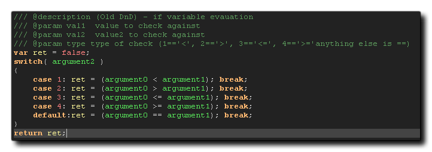

Wenn Sie möchten, dass Ihre benutzerdefinierten Skripts Code-Vervollständigung aufweisen und die erforderlichen Argumente usw. im Skript-Editor angezeigt werden, müssen Sie einige JSDoc- Stil-Kommentare hinzufügen. Wenn Sie ein Projekt importiert haben, das mit einer früheren Version von GameMaker Studio, haben Sie am Anfang des Kompatibilitätsskripts für die Funktion möglicherweise Kommentare wie diese gesehen: 
Das Format für einen typischen Skriptkopf wäre, die Beschreibung der Funktion, den Funktionsnamen und dann die verschiedenen Argumente (Parameter) zu haben, die die Funktion benötigt, wobei sichergestellt wird, dass jede Zeile mit einem dreifachen Backslash "///" als gestartet wird Das weist GameMaker Studio 2 an, Kommentare als JSDoc zu analysieren. Die Kommentare selbst müssen einen Bezeichner (gefolgt von "@") und Inhalt erhalten, und die verfügbaren Bezeichner lauten wie folgt:
| Identifikator | Inhalt |
|---|---|
| @funktion / @func | Der vollständige Skriptname und die Argumente für die Funktion " my_script(x, y, colour) ". |
| @description / @desc | Eine allgemeine Beschreibung dessen, was das Skript macht. |
| @ param / @arg / @ argument | Der Argumenttyp (optional), eingeschlossen in {}, der Argumentname und eine kurze Beschreibung (mit Leerzeichen dazwischen) |
Um eine Vorstellung davon zu bekommen, wie dies beim Schreiben eigener Skripte funktionieren würde, nehmen wir dieses grundlegende Beispiel:
// is_same_object(id, object)
if argument0.object_index == argument1
{
return true;
}
else return false;
Das ganze Skript überprüft, ob eine Instanz den gleichen object_index wie ein gegebenes Objekt hat und einfach wie folgt aufgerufen wird:
if is_same_object(id, obj_Player)
{
instance_destroy()
}
Wenn Sie dies jedoch in den Skript-Editor schreiben, werden Ihnen die Argumente nicht angezeigt und Sie erhalten keine Hilfe, wenn Sie sie verwenden. Daher müssen wir eine Beschreibung, einen Funktionsnamen und die Argumente als JSDoc-Kommentare hinzufügen:
/// @function is_same_object(id, object)
/// @description Compare an instance object index with that of
another.
/// @param {real} instance_id The unique instance ID value of the
instance to check.
/// @param {real} object_index The object index to be checked
against.
if argument0.object_index == argument1
{
return true;
}
else return false;
Wenn Sie dieses Skript jetzt irgendwo im Code aufrufen, erhalten Sie eine Auto-Vervollständigung und eine Argumenthilfe usw.
Im Bild oben zeigt der obere Teil die Funktion in der automatischen Vervollständigung und der untere Teil zeigt, wie der untere Ar- gumenthelfer funktioniert. Es ist wichtig zu beachten, dass wenn Sie das verwenden @function Bezeichner, dann wird der Skriptname, den Sie dort angeben, in der IDE genauso angezeigt wie der Skriptname im Ressourcenbaum. So können Sie dem Skript eine Sache in der Ressourcenstruktur benennen und sie als andere verwenden @function und die IDE erkennt beide als Alias der gleichen Skript-Ressource, aber nur die @function Einer wird eine Auto-Vervollständigung usw. haben.
Beachten Sie, dass sowohl der optionale "Typ" als auch die obligatorischen "Beschreibungsteile" von @param werden nicht standardmäßig im IDE-Code abgeschlossen angezeigt, und um sie zu sehen, müssen Sie die Optionen in den GML-Einstellungen aktivieren.